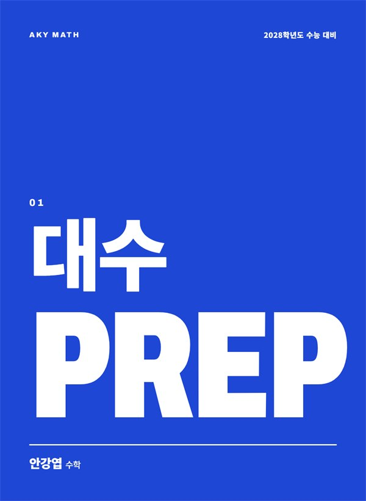
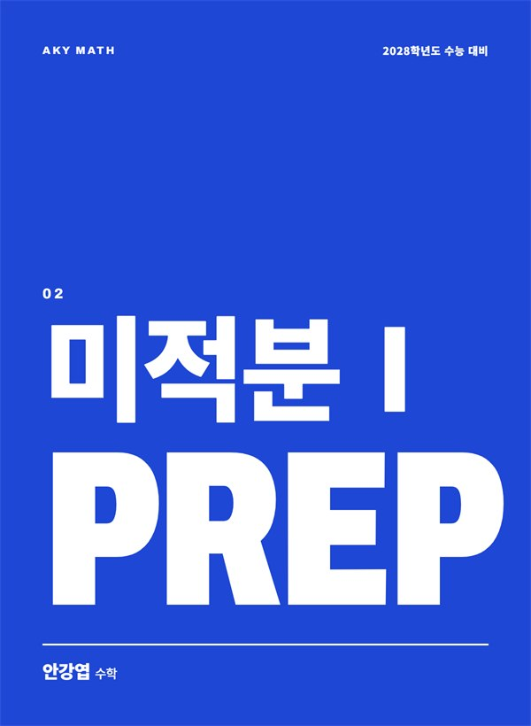
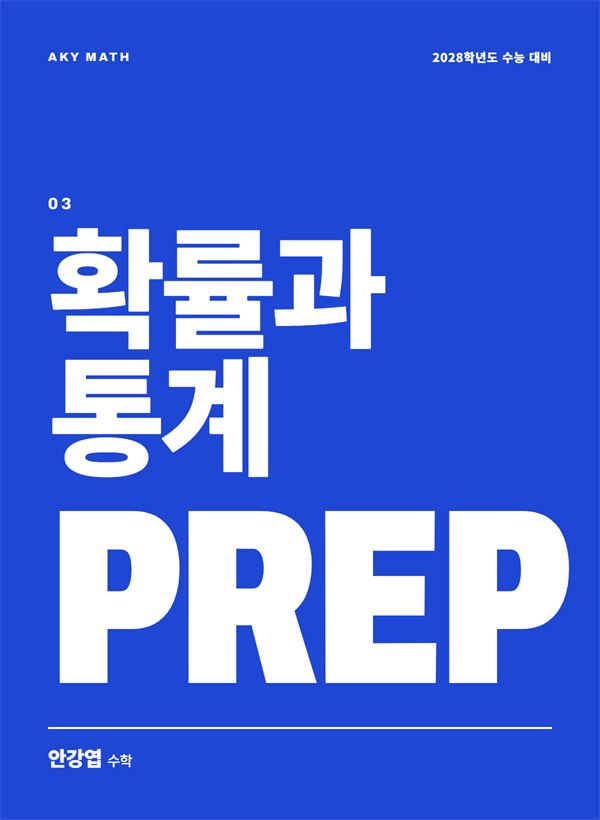
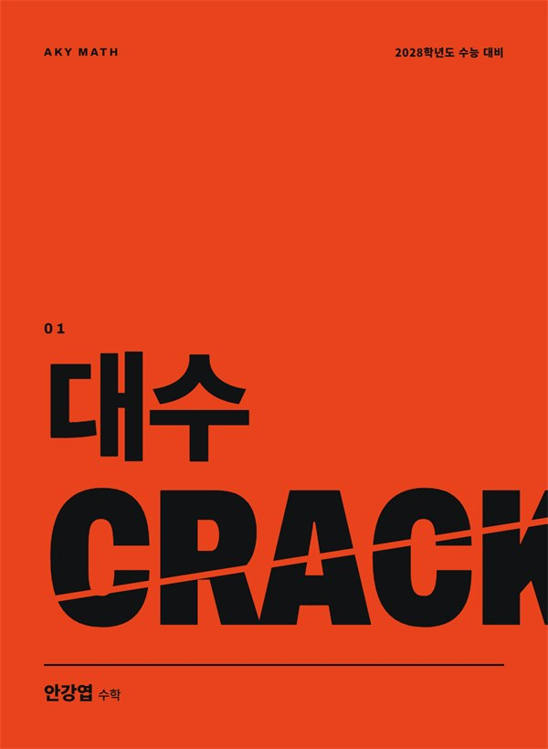
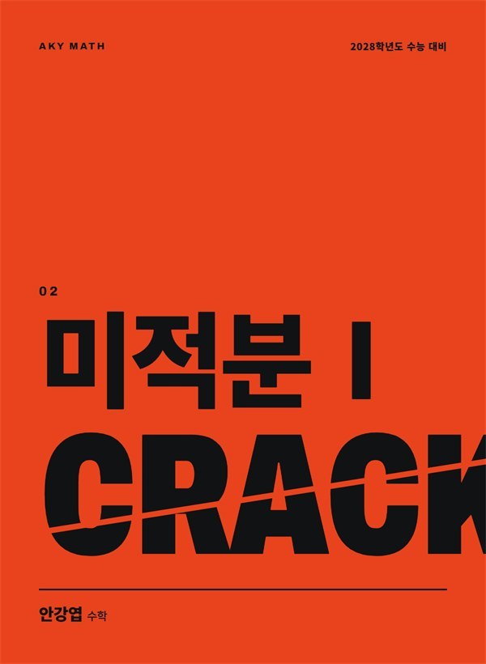
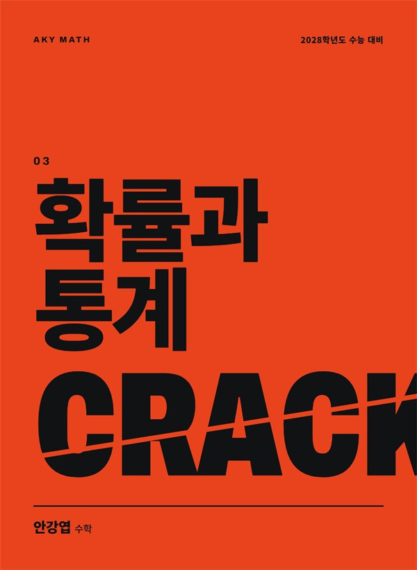

부일고 · 해운대고
자사고 대비반 · 자사고반
학교별 기출과 부교재를 분석해 변형문제를 직접 제작하고, 매 수업 제공합니다.
- 학교별 기출과 부교재 고난도 분석
- 숫자와 조건을 바꾼 변형문제 훈련
- 서답형은 풀이 과정까지 끝까지 써 보기
수학강사
같은 문제는 없습니다.
같은 원리만 있습니다.
수업
부일고 · 해운대고
학교별 기출과 부교재를 분석해 변형문제를 직접 제작하고, 매 수업 제공합니다.
고3 · N수생
평가원 문항의 기조를 기준으로, 시험장에서 실력을 그대로 꺼내 쓰도록 훈련합니다.
수업 원칙
01
공식이 아닌 원리를 묻는 문항이 고배점입니다. 외운 대로가 아니라 원리대로 푸는지 확인합니다.
02
같은 원리를 숫자와 조건을 바꿔 다르게 묻는 문제까지 반복해야 처음 보는 문제에서도 흔들리지 않습니다.
03
좋은 생각이 떠오르길 기다리지 않습니다. 소재에서 배운 해법을 먼저 꺼내고, 구조를 잡은 뒤 계산합니다.
교재
2028학년도 수능 대비. 대수, 미적분Ⅰ, 확률과 통계 총 6권을 제작하고 있습니다.
3점 ~ 쉬운 4점 · 2~3등급
CRACK으로 올라가기 위한 빌드업 단계입니다.



PREP 대수 내지
왼쪽에는 같은 핵심 개념을 쓰는 문제 2개를, 오른쪽에는 그 상황에서 꺼내 쓸 핵심 실전 개념을 담았습니다.
이미지를 누르면 크게 볼 수 있습니다.
쉬운 4점 ~ 킬러 · 1~2등급
"이런 상황에서는, 이렇게 하면 풀린다"는 수능 일반론을 마무리합니다.



CRACK 대수 내지
PREP에서 이어받은 일반론에 한 단계를 더해, 더 어려운 문제까지 같은 원리로 풀어냅니다.
이미지를 누르면 크게 볼 수 있습니다.
학교, 학년, 최근 성적을 함께 적어 주시면 더 자세히 안내해 드립니다.